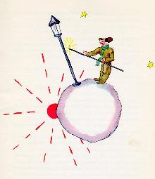

第五颗行星非常奇怪，是这些星星中最小的一颗。行星上刚好能容得下一盏路灯和一个点路灯的人。小王子怎么也解释不通：这个坐落在天空某一角落，既没有 房屋又没有居民的行星上，要一盏路灯和一个点灯的人做什么用。
|
 |
小王子一到了这个行星上，就很尊敬地向点路灯的人打招呼：
“早上好。——你刚才为什么把路灯灭了呢？”
“早上好。——这是命令。”点灯的回答道。
“命令是什么？”
“就是熄掉我的路灯。——晚上好。”
于是他又点燃了路灯。
“那么为什么你又把它点着了呢？”
“这是命令。”点灯的人回答道。
“我不明白。”小王子说。
“没什么要明白的。命令就是命令。”点灯的回答说。“早上好。”
于是他又熄灭了路灯。
然后他拿一块有红方格子的手绢擦着额头。
“我干的是一种可怕的职业。以前还说得过去，早上熄灯，晚上点灯，剩下时间，白天我就休息，夜晚我就睡觉…”
“那么，后来命令改变了，是吗？”
点灯的人说：“命令没有改，惨就惨在这里了！这颗行星一年比一年转得更快，而命令却没有改。”
“结果呢？”小王子问。
“结果现在每分钟转一圈，我连一秒钟的休息时间都没有了。每分钟我就要点一次灯，熄一次灯！”
“真有趣，你这里每天只有一分钟长？”
“一点趣味也没有，”点灯的说，“我们俩在一块说话就已经有一个月的时间了。”
“一个月？”
“对。三十分钟。三十天！——晚上好。”
于是他又点着了了他的路灯。
小王子瞅着他，他喜欢这个点灯人如此忠守命令。这时，他想起了他自己从前挪动椅子寻找日落的事。他很想帮助他的这位朋友。
“告诉你，我知道一种能使你休息的办法，你要什么时候休息都可以。”
“我老是想休息。”点灯人说。
因为，一个人可以同时是忠实的，又是懒惰的。
小王子接着说：
“你的这颗行星这样小，你三步就可以绕它一圈。你只要慢慢地走，就可以一直在太阳的照耀下，你想休息的时候，你就这样走…那么，你要白天又多长它就有 多长。”
“这办法帮不了我多打忙，生活中我喜欢的就是睡觉。”点灯人说。
“真不走运。”小王子说。
“真不走运。”点灯人说。“早上好。”
于是他又熄灭了路灯。
小王子在他继续往前旅行的途中，自言自语地说道：
“这个人一定会被其他那些人，国王呀，爱虚荣的呀，酒鬼呀，实业家呀，所瞧不起。可是唯有他不使我感到荒唐可笑。这可能是因为他所关心的是别的事，而 不是他自己。”